¿Qué significa estar en peligro de extinción?
Una especie se considera en peligro de extinción cuando sus individuos están en un alto riesgo de desaparecer de la naturaleza. Esto puede deberse a la pérdida de hábitat, caza furtiva, contaminación, cambio climático o introducción de especies invasoras. La Unión Internacional para la Conservación de la Naturaleza (UICN) clasifica a las especies en categorías como Vulnerable, En Peligro y En Peligro Crítico, según el riesgo que enfrentan en estado silvestre.
¿Por qué desaparecen?
La desaparición de las especies es un proceso que ha ocurrido de forma natural a lo largo de la historia de la Tierra (como la extinción de los dinosaurios). Sin embargo, el problema actual es la velocidad: los científicos advierten que hoy las especies se están extinguiendo a un ritmo hasta 1,000 veces más rápido de lo normal, y el factor común detrás de casi todas las causas actuales es la actividad humana.
Las razones principales se pueden agrupar en cinco grandes causas:
1. Pérdida y Fragmentación de Hábitats
Es la causa número uno a nivel mundial. Cuando destruimos un ecosistema para construir ciudades, carreteras o granjas, dejamos a los animales sin hogar, sin comida y sin refugio.
Deforestación: La tala de selvas (como el Amazonas) para la ganadería o la siembra de monocultivos (como la palma de aceite).
Fragmentación: Cuando una carretera o una presa divide un bosque a la mitad. Los animales quedan aislados en poblaciones pequeñas, lo que provoca problemas de consanguinidad y los expone a ser atropellados.
2. El Cambio Climático y el Calentamiento Global
El clima del planeta está cambiando demasiado rápido para que los animales puedan adaptarse o migrar.
Alteración de ciclos: Muchas aves e insectos nacen antes o después de que florezcan las plantas de las que se alimentan.
Pérdida de ecosistemas clave: El derretimiento de los polos afecta directamente a osos polares y pingüinos, mientras que el aumento de la temperatura del agua está matando los arrecifes de coral, el hogar de una cuarta parte de la vida marina.
3. Explotación Directa: Caza y Tráfico Ilegal
El comercio ilegal de vida silvestre es uno de los negocios ilícitos más lucrativos del mundo, justo detrás del tráfico de drogas y armas.
Caza furtiva: Motivada por la demanda de partes específicas en el mercado negro (como los cuernos de rinoceronte, el marfil de los elefantes o los huesos de tigre para la medicina tradicional).
Mercado de mascotas exóticas: La captura de aves (como guacamayas y loros), reptiles y primates para ser vendidos como mascotas, donde la mayoría muere durante el traslado.
4. Contaminación del Entorno
Los desechos humanos alteran químicamente el agua, el suelo y el aire, volviéndolos tóxicos para la fauna.
Plásticos en el océano: Animales como tortugas, ballenas y aves marinas mueren por ingerir plástico o quedar atrapados en redes de pesca fantasma.
Químicos y pesticidas: El uso masivo de agroquímicos en el campo envenena los ríos y es una de las razones principales detrás del colapso global de las poblaciones de abejas y otros polinizadores esenciales.
5. Introducción de Especies Invasoras
Cuando los humanos introducen (ya sea por accidente o a propósito) una especie en un ecosistema que no es el suyo, esta puede convertirse en una plaga.
Las especies invasoras suelen no tener depredadores naturales en su nuevo hogar, por lo que se reproducen rápidamente y compiten por alimento con las especies nativas, transmiten enfermedades nuevas o las cazan directamente hasta extinguirlas.
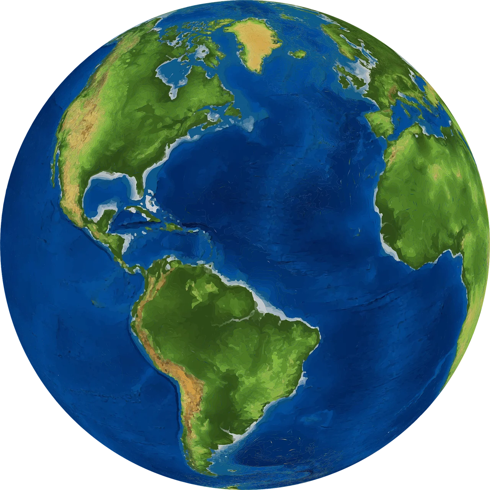
EN EL MUNDO
Dale clic a cada imagen para redirigirte al video.
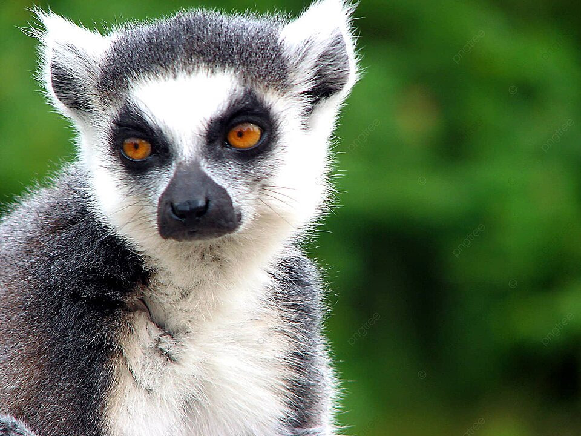
LEMUR
Los lémures son primates endémicos de Madagascar, con más de 100 especies diferentes, desde el lémur ratón hasta el índri, el más grande. Según la Lista Roja de la Unión Internacional para la Conservación de la Naturaleza (IUCN), 103 de 107 especies de lémur están clasificadas como amenazadas, y 33 especies se encuentran en peligro crítico de extinción, incluyendo el lémur de cola anillada, cuya población se ha reducido un 95% desde el año 2000, quedando solo unos 2.000 individuos en su hábitat natural.
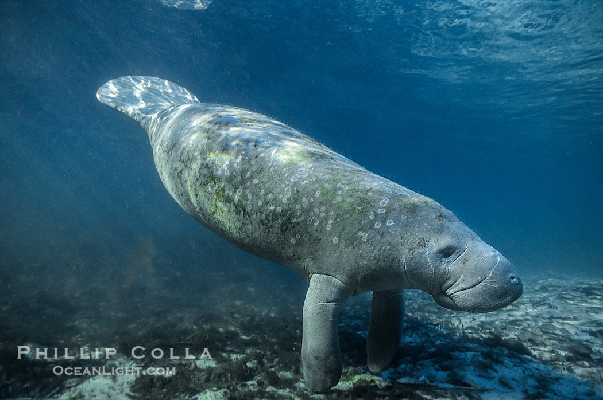
MANATI DEL CARIBE
El número de individuos reproductivamente maduros para la subespecie se estima en 2,091 con una población total de unos 7,315 manatíes. La tendencia poblacional T. manatus manatus esta disminuyendo, con una perdida posible de 20% de los individuos en los próximos 20 años debido a causas antrópicas como la caza directa, degradación de hábitat y choques con embarcaciones.
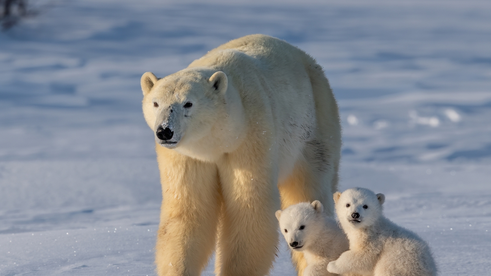
OSO POLAR
El oso polar (Ursus maritimus) se encuentra en una situación crítica debido a la rápida transformación de su hábitat en el Ártico, una transformación impulsada principalmente por el cambio climático. Este mamífero marino, que es un símbolo icónico de las regiones polares, ha visto su población disminuir drásticamente en las últimas décadas, convirtiéndose en una de las especies más vulnerables del planeta. La lucha por su supervivencia no solo afecta a la especie en sí, sino que también tiene implicaciones profundas para los ecosistemas en los que habita.
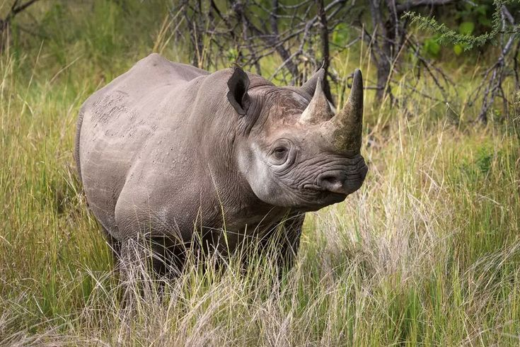
RINOCERONTE
Cuatro de las cinco especies de rinocerontes están en peligro de extinción, con algunas subespecies al borde de la desaparición, principalmente por caza furtiva y pérdida de hábitat.
Actualmente, existen aproximadamente 28.000 rinocerontes en el mundo, distribuidos en África y Asia.

TIGRE DE SUMATRA
El tigre de Sumatra (Panthera tigris sumatrae) es la subespecie de tigre más pequeña y rara, endémica de la isla de Sumatra, Indonesia. Su población se estima entre 400 y 500 ejemplares, que habitan principalmente en cinco parques nacionales de la isla. Sin embargo, su situación es alarmante, ya que está clasificado como "En peligro crítico" por la Unión Internacional para la Conservación de la Naturaleza (UICN).
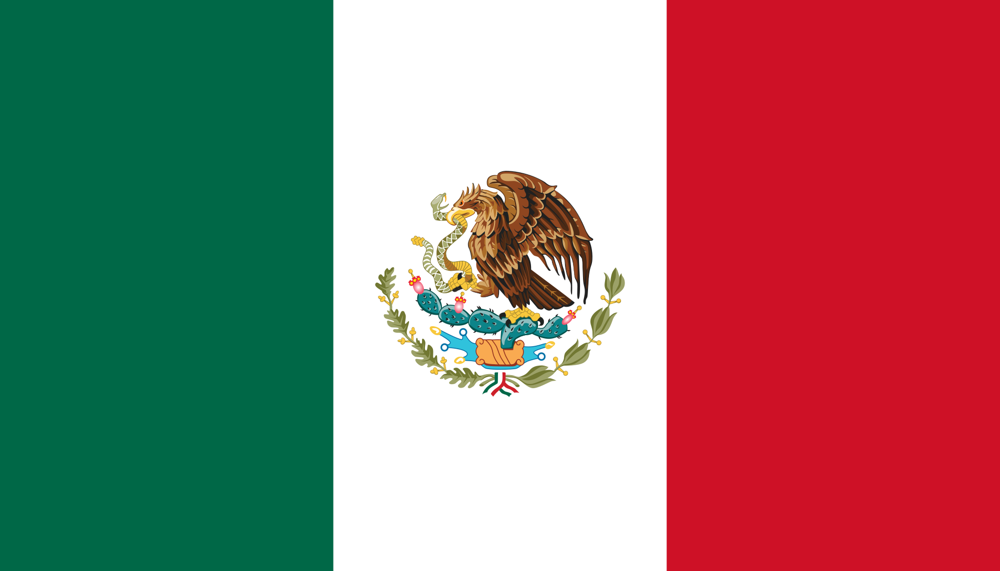
EN MÉXICO
Dale clic a cada imagen para redirigirte al video.
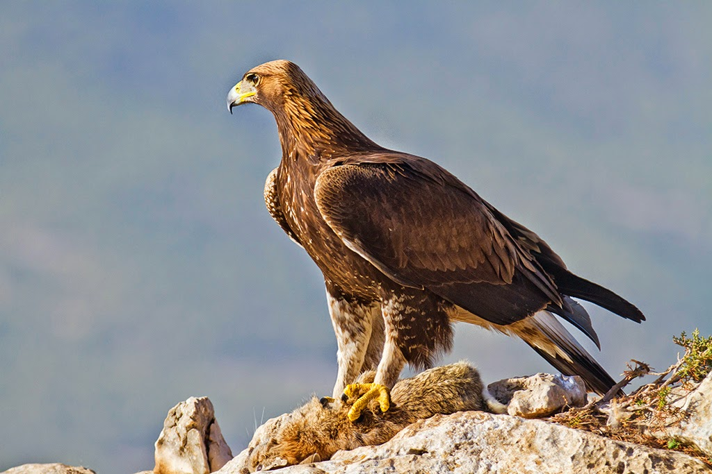
ÁGUILA REAL
El águila real o águila caudal es un ave que tiene mucha fuerza y liderazgo en algunas culturas y, de hecho, algunos países usan a esta ave de rapiña como símbolo nacional. Por ejemplo, en México, el águila real es la especie emblemática del país siendo símbolo en su bandera. Aún así, esta importancia que tiene esta ave no la ha librado de encontrarse amenazada.
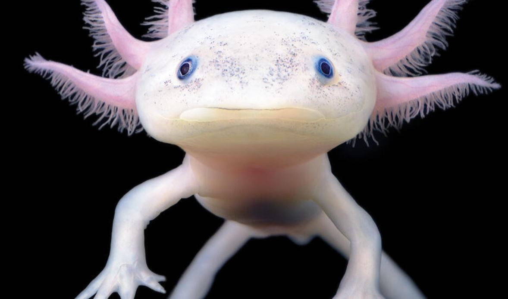
AJOLOTE
El nombre científico del ajolote mexicano o axolotl es Ambystoma Mexicanum. Se trata de un tipo de salamandra que posee diversas particularidades. Entre ellas tenemos que la condición de este animalito es la de neotenia.
Es decir, que aún en su etapa adulta conserva sus rasgos larvales. Esto quiere decir que, prácticamente, se conserva joven siempre. Cabe señalar que el ajolote está catalogado como una especie endémica en peligro crítico de extinción por la Unión Internacional para la Conservación de la Naturaleza (UICN).
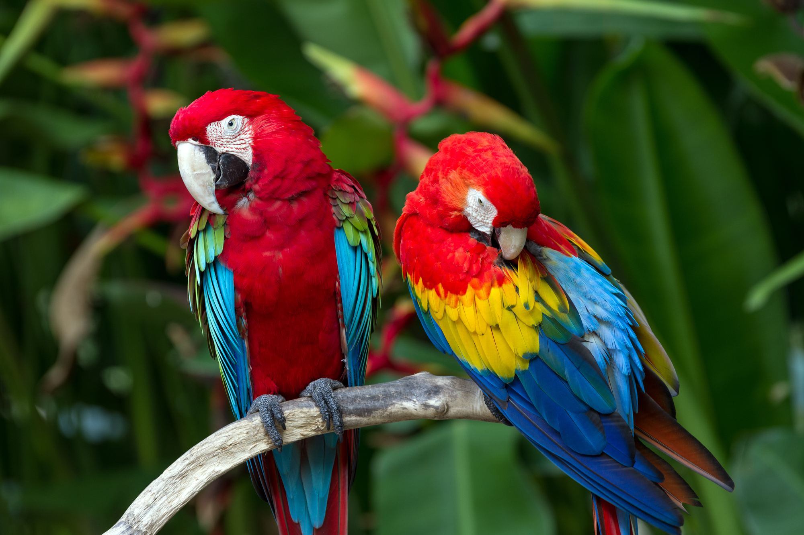
GUACAMAYA ROJA
La guacamaya roja, también conocida como guacamaya bandera o, científicamente, Ara macao, se encuentra en la lista roja de especies amenazadas de la Unión Internacional para la Conservación de la Naturaleza (UICN), aunque se sitúa entre aquellas especies de preocupación menor, debido a que la magnitud de las amenazas y su consecuente desaparición no se encuentran en un estado crítico.
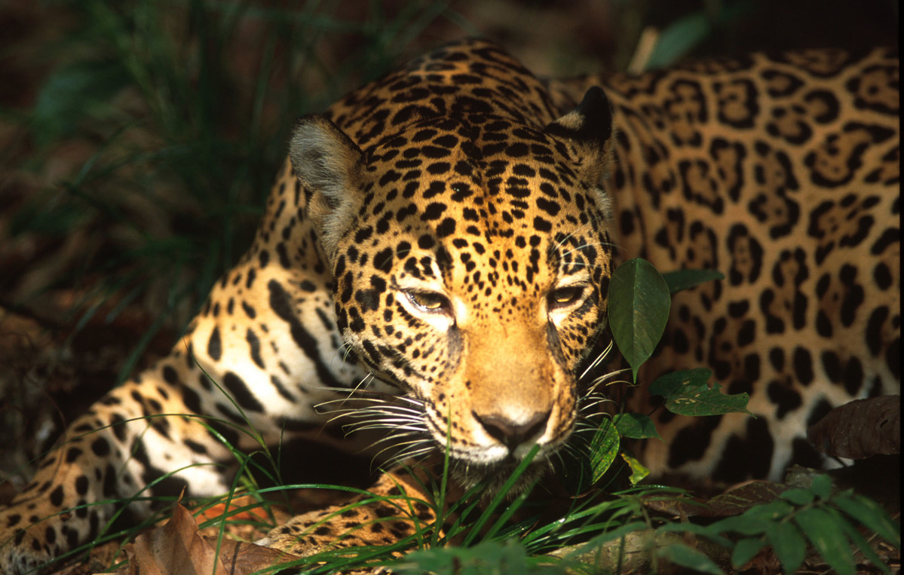
JAGUAR
E En México, el jaguar está oficialmente clasificado como “en peligro de extinción” según la NOM-059-SEMARNAT, reflejando el grave riesgo que enfrenta dentro del país. A nivel internacional, la Unión Internacional para la Conservación de la Naturaleza (UICN) lo considera “casi amenazado”, debido a que algunas poblaciones mexicanas están fragmentadas y presionadas. La especie ha desaparecido de amplias zonas, incluyendo Sonora, y de países como Uruguay y El Salvador.
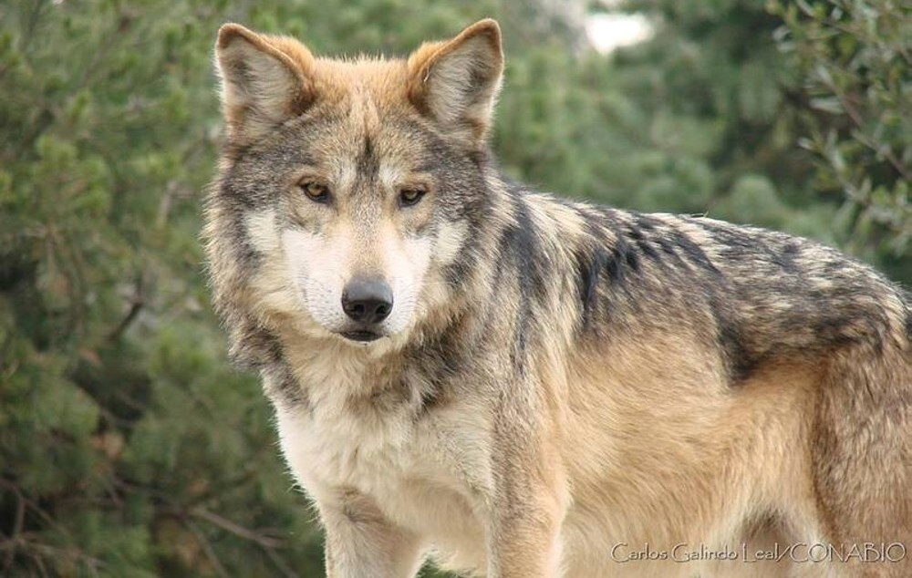
LOBO MEXICANO
El lobo mexicano (Canis lupus baileyi) es una subespecie en peligro crítico de extinción, con menos de 300 individuos en estado silvestre y esfuerzos activos de conservación en México y Estados Unidos.
MÁS SOBRE ANIMALES EN PELIGRO DE EXTINCIÓN
Video de Daniel Azuara sobre el Mahuahual en TikTok
Video de Forrest Galante encontrando la Fernandina Island Galapagos Tortoise en TikTok
Cuidemos a los animales
BSSL